What CSS can do in Grafana
The HEARTS360 Toolkit dashboard runs on Grafana. With a little HTML, CSS and chart code inside ordinary Grafana panels, it now reads much more like hearts360.org — same data, same Grafana, no new services.
All screenshots use generated demo data; names, IDs and phone numbers are not real people.
Before and after
Overview: screening-to-treatment cascade
One section with two horizontal cascades and a headline “patients protected” card.
- Percent and patient count on every bar, each side with its own denominator
- Screening target drawn as a dashed line with a label
- A big, readable headline number instead of a count axis
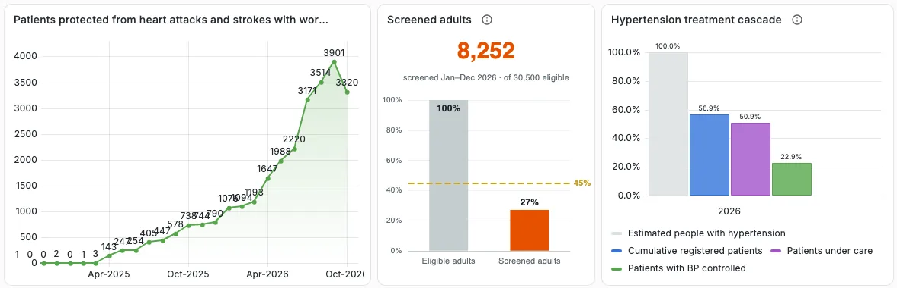
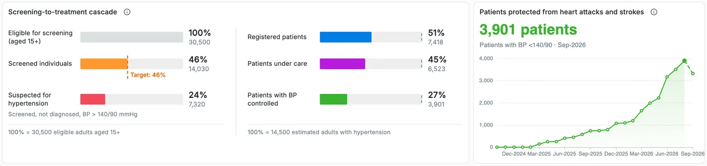
Hypertension treatment outcomes
Three trend charts and six number tiles became one hearts360-style card.
- “Outcomes for N patients under care …” states the denominator and period
- hearts360 colours, latest completed month in the headline, running month dashed
- No per-point labels; hover shows month, percent and patient count
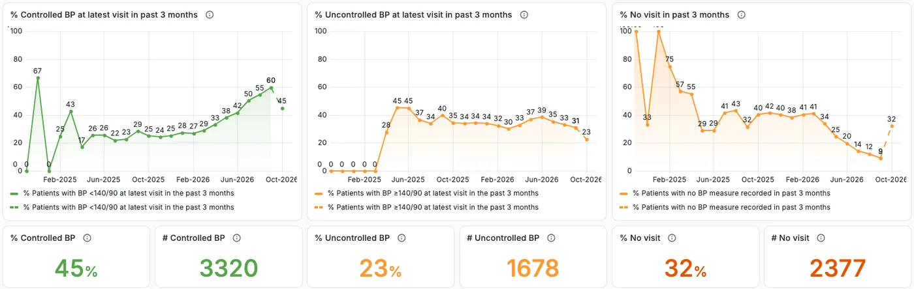
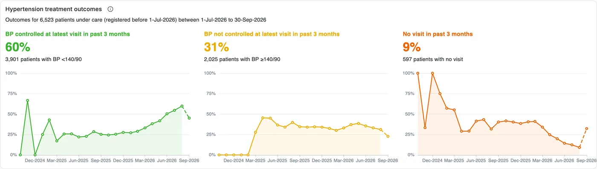
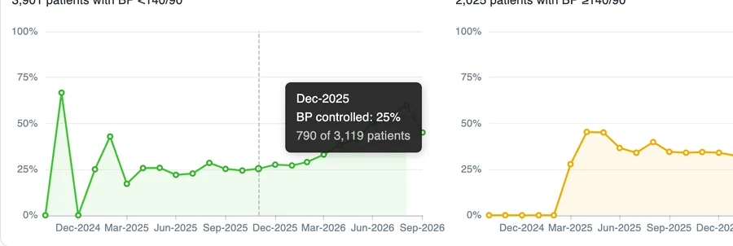
Diabetes treatment outcomes
The same pattern on the Diabetes tab, with hearts360’s exact colours.
- Blood sugar not controlled split into its two definitions, with a total line
- Colour keys in the tooltip match the bars
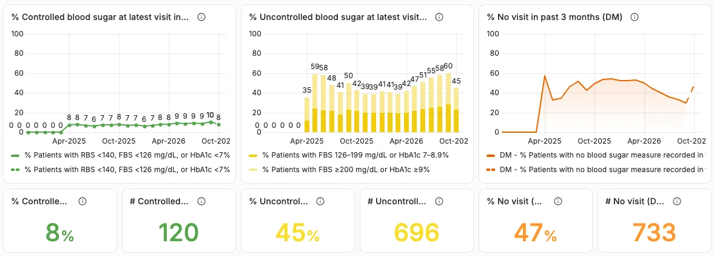
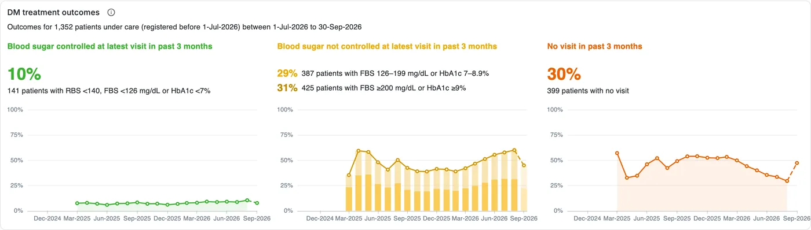
Quarterly cohort reports
Grafana’s bar chart can’t centre labels or show captions under bars, so this one is drawn in HTML and CSS.
- Slim bars, centred white percentages, controlled on top
- “Q2-2026 cohort · 1,003 patients · result from latest visit in Q3-2026” under each bar
- Unfinished cohorts hidden instead of showing a false 100% “no visit”
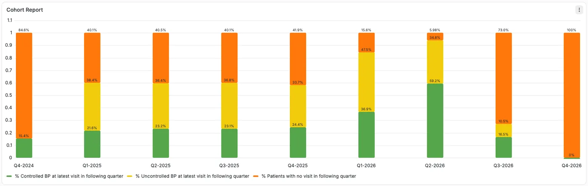
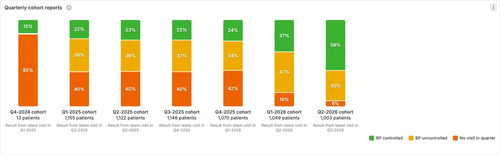
Overdue patients list
A call queue that saves as you work — the biggest step beyond what Grafana panels do out of the box.
- Pick a call result in the row and it saves; removing a patient asks to confirm
- Status chips (Pending to call, No visit in 1 year, …), search, facility and phone filters
- HTN / DM tags, readable dates, and a one-click XLSX download of the current view
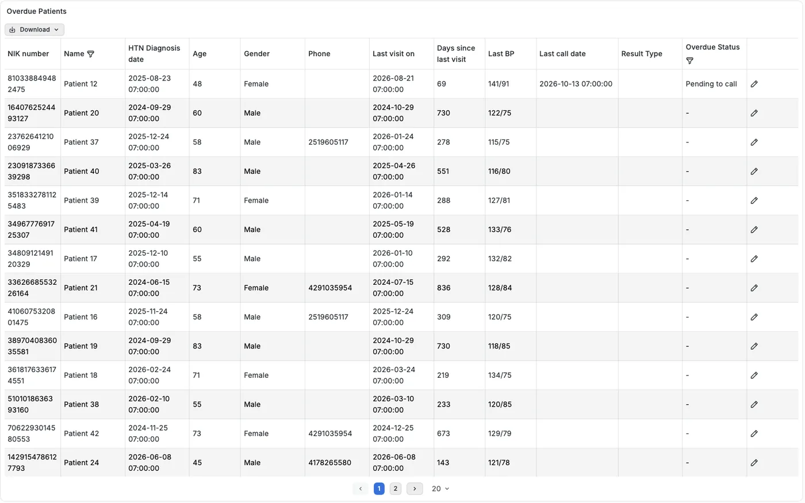
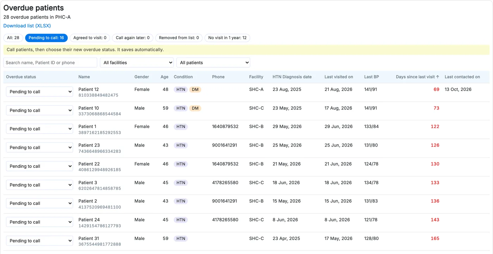
How it’s done
HTML + CSS panels
A text panel renders an HTML template with its own CSS, filled from a SQL query. Used for the cascade, cohort bars and overdue list.
Charts in code
A short JavaScript function builds each chart: headline text, multiple mini-charts in one card, dashed running month.
One look everywhere
hearts360 colours, the tooltip and number formatting live in one shared helper, so every chart behaves the same.
Interactive, with care
The overdue list saves through Grafana’s own data API using the existing SQL, with values checked before sending.
Trade-offs
| Good for | Watch out for |
|---|---|
| Layouts native panels can’t do (cascades, cohort captions, headline cards) | CSS only styles our own HTML panels — Grafana’s built-in charts keep their look |
| Exact brand colours, type and spacing | Each custom panel is code to maintain; native panels improve with Grafana for free |
| Interactive tools: auto-save, filters, downloads | Anything that writes data needs validation and permissions thought through |
| Tiny cost: a few KB inside the dashboard file | Pin Grafana and plugin versions, and run a quick check before upgrading |
Try it yourself
- Open the demo dashboard and go to Overdue list; pick a facility such as PHC-A.
- Open the panel menu → Edit → Styles.
- Change a colour (for example
#0075eb) and watch the panel update instantly — no deploy.